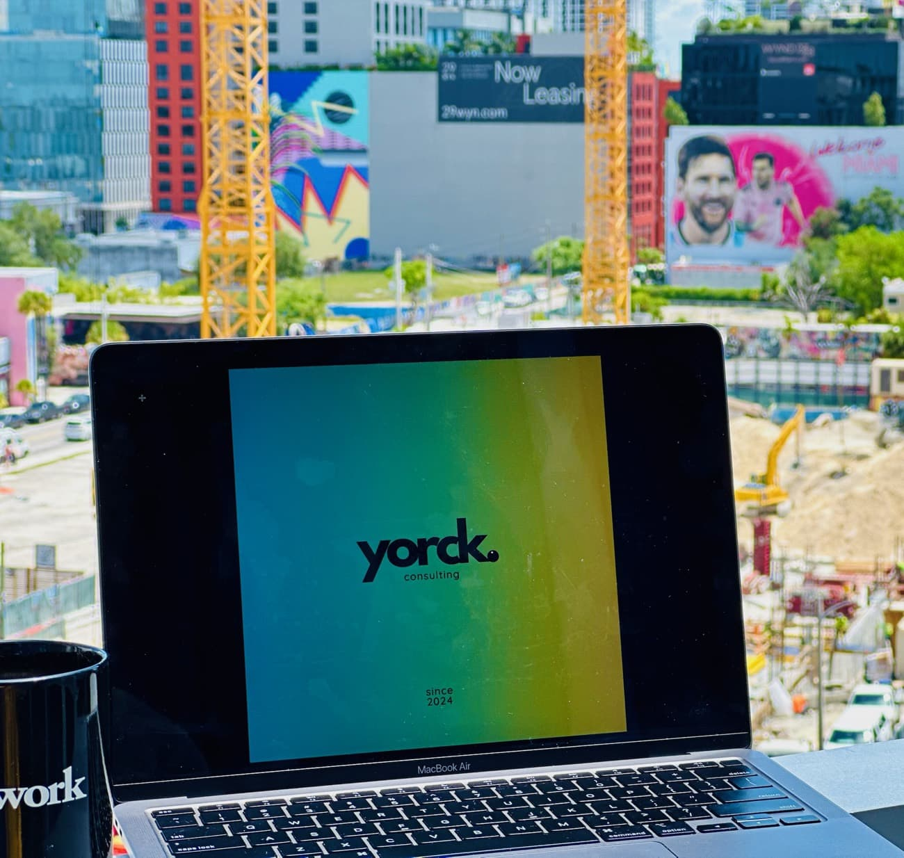
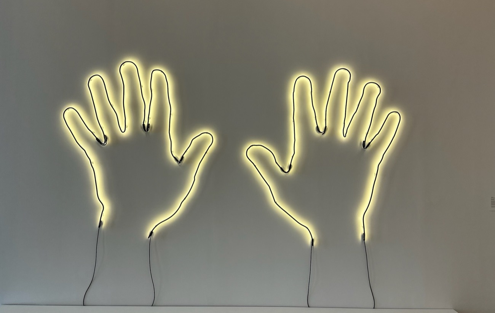

Ein verlässlicher Sparringspartner auf Augenhöhe, für die Entscheidungen, die politisch heikel, persönlich belastend oder schlicht ohne Gegenüber sind.
Ausgangslage
Führung wird auf den oberen Ebenen oft einsam. Geschäftsführerinnen und Vorstände treffen Entscheidungen, die politisch heikel, persönlich belastend oder schlicht ohne Gegenüber sind. Klassische Trainings helfen hier wenig. Was fehlt, ist ein verlässlicher Sparringspartner, der zuhört, einordnet und auch ehrlich widerspricht, ohne eigene Agenda.
Unser Ansatz: Leadership Advisory
Wir begleiten Führungskräfte in ihrer Rolle, nicht mit fertigen Rezepten, sondern mit strukturierter Reflexion und einem klaren Blick von außen. In regelmäßigen Gesprächen arbeiten wir an dem, was gerade ansteht:
- schwierige Personalentscheidungen
- Spannungen im Führungskreis
- die eigene Wirkung und der Umgang mit Druck

Das rote Telefon: eine Direktleitung für Entscheidungen, die nicht bis zum nächsten Termin warten.
Das rote Telefon
Ergänzend gibt es ein Format, das wir das rote Telefon nennen: eine kurzfristig erreichbare Direktleitung für die Momente, in denen eine Entscheidung nicht bis zum nächsten Termin warten kann. Wir verbinden Vertraulichkeit mit Verbindlichkeit und begegnen unseren Gesprächspartnern auf Augenhöhe.
Wirkung
So entsteht ein Raum, in dem Führungskräfte ihre Gedanken sortieren, Optionen abwägen und gestärkt entscheiden. Führung wird klarer und ruhiger. Gute Entscheidungen entstehen schneller, weil jemand da ist, der ehrlich mitdenkt.
